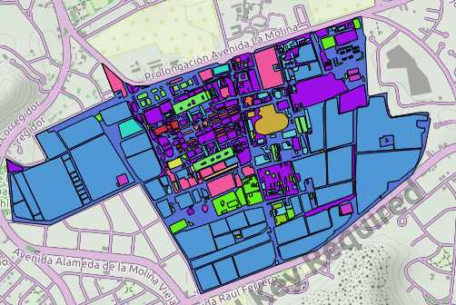

Geoportal LTA - FCF - UNALM
Universidad Nacional Agraria La Molina - 2018
Contenido
- Inicio
- Cambio de uso de suelo en la UNALM
- Delimitación Microcuencas del Rimac
- Orden de rios de la Cuenca del Rimac
- Concesion LTA
- Levantamiento de parcelas de formas distintas en Jenaro Herrera
- Levantamiento de parcelas permanentes en Jenaro Herrera
- Censo del bosque simulado en la UNALM
- Inventario del bosque simulado de la UNALM
